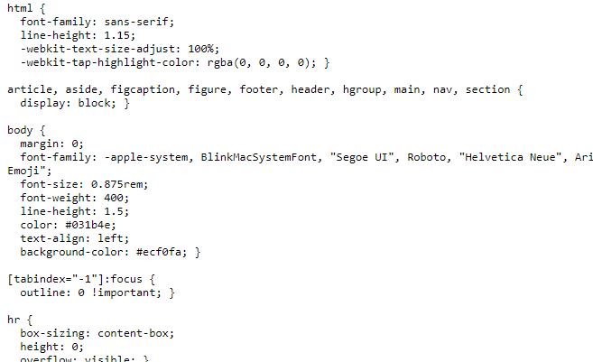
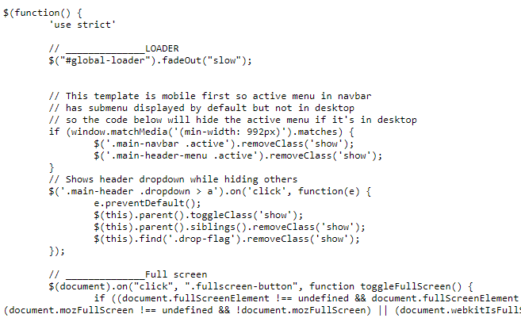
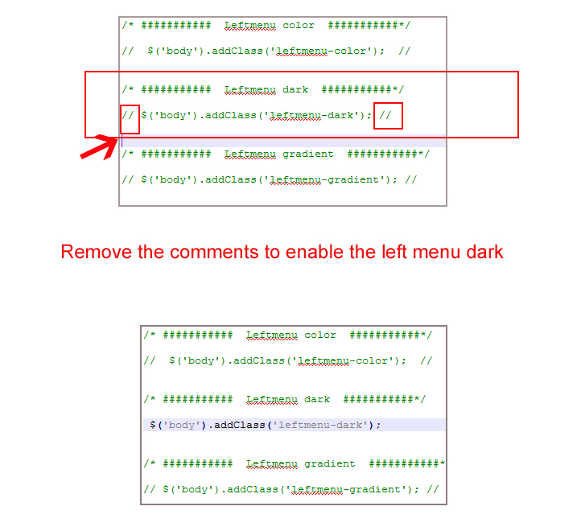
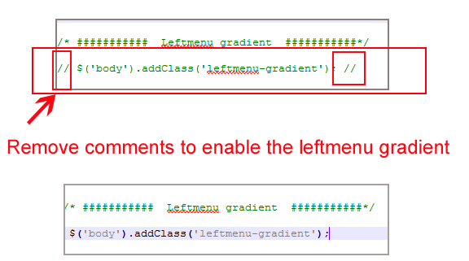
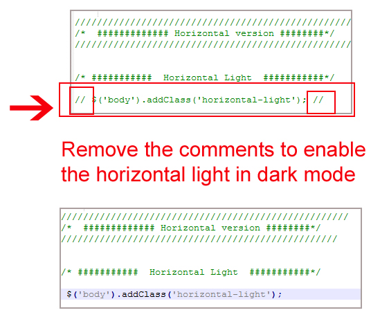
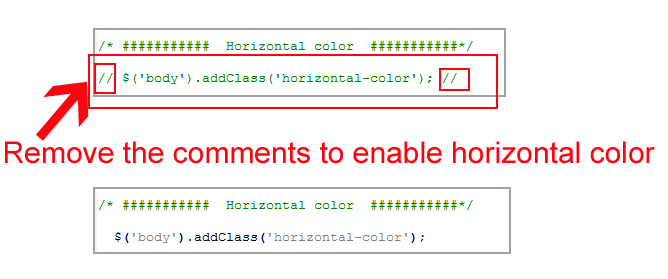
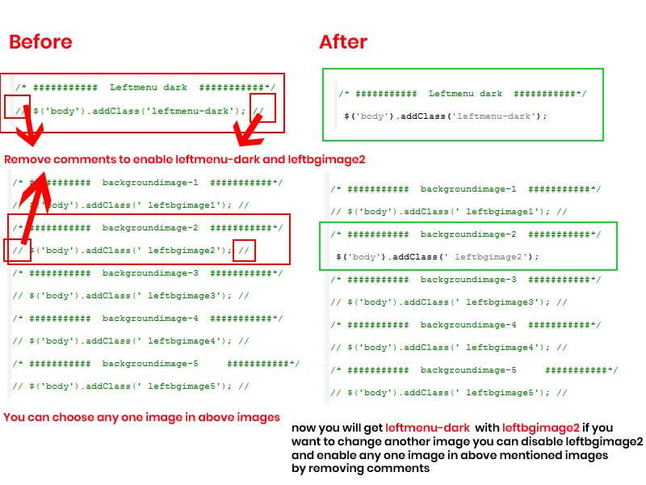

Main-Template

Thank you for purchasing our admin template. Feel free to contact us any time. We have a dedicated team to provide you the best support. If you want any queries please contact live chat or email : sprukotechnologies@gmail.com
If You Love Our Template Design Please don't forgot to rate it. Thank you so much!
VALEX– is a modern, and creative admin template using modern and minimal design. It is fully flexible user-friendly and responsive. VALEX admin template is powered with HTML 5, SASS, & Bootstrap 4 which looks great on Desktops, Tablets, and Mobile Devices. This Template Includes 92 HTML Pages & 70+ Plugins more UI elements . No Need to do hard work for this template customization. We already designed it and you can easily design your website just how you like it. Advanced Form-Elements like Date pickers, form elements are included. This template using Bootstrap4 framework. This admin template is fully 100% Premium Admin Templates quality. This template designed for using HTML5,CSS3,Jquery. After Purchased this template you will get All HTML files,CSS, Scss and JS Files.
It has super clean flat user interface admin Backend design, easy customizable components and widgets.The Template comes with a awesome unique design also we ensure you can easily design admin template.
it is a fully responsive layout for all type of devices. Works on all major web browsers, Desktop, iPhone, iPad, Tablet and all other smart phone devices
Once you Purchase VALEX – Premium dashboard ui bootstrap rwd admin html5 template, you will be able to get free download of all future updates.
HTML/ ├── assets ├── css ├── img ├── js ├── plugins ├── scss
style.css is the main CSS file located in assets/css folder of the package. Whole CSS file is well indexed with topic and its related code.
custom.js is the mail javascript file having all the js code. File is located in assets/js/ folder. This file code is also well formatted and section in different respective function names.
Along with this chart library based js code and dashboard based js code are added in separate files for ease of use of user.
VALEX comes with power of SCSS. The css files can be generated from scss by simply following below steps:
Gulp is a JavaScipt streaming task runner. It automate many development tasks. Using gulp you can perform tasks like running a local server, minifying code, compilation, Browser sync ,optimizing images, etc... We are using gulp which allows to easily compilation of scss to csss. You can read it more about it here.
Please follow below steps to install and setup all prerequisites:
Make sure to have the Node.js installed & running in your computer. If you already have installed nodejs on your computer, you can skip this step, otherwise install nodejs on your computer,
Make sure to have the Gulp installed &
running in your computer. If you already have installed gulp on your computer, you can skip
this step. In order to install, just run command npm install -g gulp from
your terminal.
To setup, follow below mentioned steps:
Make sure to have all above prerequisites installed & running in your computer
Open your terminal, go to your folder and enter the command npm install. This
would install all required dependencies in node_modules folder.
After you finished with above steps, you can run the command to compile scss into css:
gulp
| Command | Description |
|---|---|
gulp
|
Runs the project locally, starts the development server and watches for any changes in your code, including your html, javascript, sass, etc. The development server is accessible at http://localhost:3000. |
gulp watch
|
In this template gulp watch command is for When any changes to the source file scss folder i.e (.scss) is made, the watch will run an appropriate task.
All the CSS files under assets/css/ folder will be watched and upon changes made to these files, the styles task will be executed.
|
gulp dark
|
In this template gulp dark command is for the changes is made in style-dark.scss file. style-dark.scss will be watched and what ever changes has made in style-dark.scss file it automatically updated in style-dark.css file
|
gulp menu
|
In this template gulp menu command is for the changes is made in sidemenu.scss file. sidemenu.scss will be watched and what ever changes has made in sidemenu.scss file it automatically updated in sidemenu.css file
|
gulp skin
|
In this template gulp skin command is for the changes is made in skin-modes.scss file. skin-modes.scss will be watched and what ever changes has made in skin-modes.scss file it automatically updated in skin-modes.css file
|
Go To _fonts.scss (assets/scss/custom/fonts/_fonts.scss )
if you want to change another font-family Go to the site Google Fonts And Slect One font Family and import In to style.css file
Example:

And paste Your Selected font-family in _fonts.scss
Example:

Go To "assets/images/brand" folder and replace your logo with Previous Logos within in image size. note: Please don't increase logo sizes. Replace your logo within given image size. otherwise the logo will not fit in particular place it disturbs the template design.
open custom.js file go to skins section.. and remove comments for leftmenu-dark to enable leftmenu dark style as shown in below image

open custom.js file go to skins section.. and remove comments for leftmenu-color to enable leftmenu color style as shown in below image

open custom.js file go to skins section.. and remove comments for leftmenu-gradient to enable leftmenu gradient style as shown in below image

open custom.js file go to skins section.. and remove comments for leftbgimage1 to enable leftbgimage1 style as shown in below image

Similarly you can enable any Light Leftmenu background image by removing comments from leftbgimage1 to leftbgimage5 .
NOTE: while you are enabling one you must disable remaining leftbgimages
EXample : i choose leftbgimage1 for my template ,i dont want that image i want to change leftbgimage1 to leftbgimage2 . so i enabled leftbgimage2 by removing comments and disabled leftbgimage1 by adding comments as shown below image.

open custom.js file go to skins section.. and remove comments for leftmenu-light to enable leftmenu-light as shown in below image

open custom.js file go to skins section.. and remove comments for body-style1 to enable body-style1 as shown in below image

open custom.js file go to skins section.. and remove comments for horizontal-light to enable horizontal-light as shown in below image

open custom.js file go to skins section.. and remove comments for horizontal-color to enable horizontal-color as shown in below image

open custom.js file go to skins section.. and remove comments for horizontal-dark to enable horizontal-dark as shown in below image

open custom.js file go to skins section.. and remove comments for horizontal-gradient to enable horizontal-gradient as shown in below image

open custom.js file go to skins section.. and remove comments for leftmenu-light and remove the commets for your choosen image as shown in below image
Similarly you can enable Leftmenu-light with any image form leftbgimage1 - leftbgimage5 .
NOTE: while you are enabling one you must disable remaining leftbgimages

open custom.js file go to skins section.. and remove comments for leftmenu-color and remove the commets for your choosen image as shown in below image
Similarly you can enable leftmenu-color with any image form leftbgimage1 - leftbgimage5 .
NOTE: while you are enabling one you must disable remaining leftbgimages

open custom.js file go to skins section.. and remove comments for leftmenu-dark and remove the commets for your choosen image as shown in below image
Similarly you can enable leftmenu-color with any image form leftbgimage1 - leftbgimage5 .
NOTE: while you are enabling one you must disable remaining leftbgimages

open custom.js file go to skins section.. and remove comments for leftmenu-gradient and remove the commets for your choosen image as shown in below image
Similarly you can enable leftmenu-color with any image form leftbgimage1 - leftbgimage5 .
NOTE: while you are enabling one you must disable remaining leftbgimages

Google fonts are used in the template. They are as follows: Google Fonts
All Images are used: Pexels.com